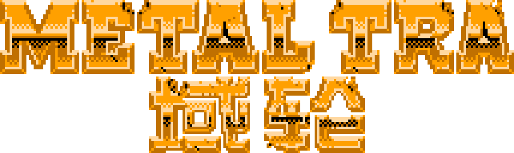

METAL MAX 工具箱
METAL MAX WASTELAND SYSTEM
─
□
✕

DECODING: ACTIVE
SIGNAL: MAX [||||||]
LOC: 35.68, 139.69
BS控制器
NAME
000,000G
ANALYZING...
HUNTER DATABASE
DECODING: ACTIVE
SIGNAL: STRONG [|||||| ]
REF: METAL MAX-DB-V2.2
SYSTEM MESSAGE
CODE: 404-NOT-FOUND
> 输入名称后按 确认 或回车